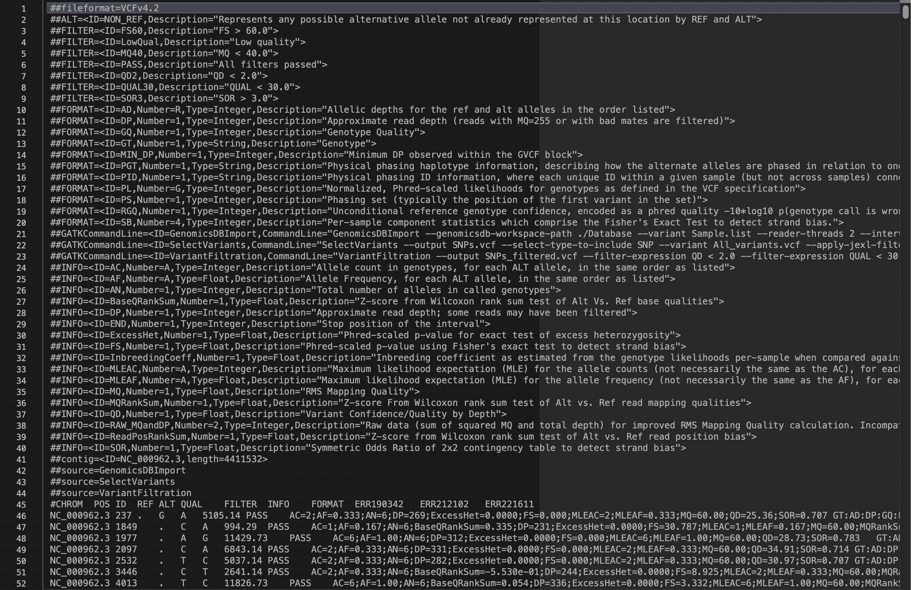

Variant calling and the VCF format
In the previous activity, we viewed BAM files manually in Tablet. To identify variants, one could theoretically search the BAM file for SNPs and small insertions/deletions (Indels) to identify diffences between the reference strain and each sample. However, this would not be efficient and it can be subjective as to whether we trust that the aligned sequences at that site are free or error.
Instead, we specialized software to ‘call’ potential variants in our BAM files, using probabilistic methods for determining the likelihood of a SNP or Indel being true variation or sequencing/alignment errors. We can also call variants in multiple samples concurrently and use this information to build up a picture of the variation across our samples.
Here, we will use the software GATK to carry out variant calling. This software takes steps to improve the accuracy of variant calls, such as base quality recalibration and local realignment around structural variants, to increase our confidence in the detected SNPs and Indels.
After variant calling, we will inspect the resulting Variant Call Format (VCF) file.
For this activity, we will use the following files found in your data folder:
-
ERR221611.bam and ERR221611.bai – A BAM files and ccompanying index file from a Mycobacterium tuberculosis isolate that has been aligned against the H37Rv reference strain.
-
ERR212102.vcf, ERR212102.vcf.idx, ERR190342.vcf and ERR190342.vcf.idx - GVCF and index files for 2 isolates of Mycobacterium tuberculosis that have been created with GATK 'HaplotypeCaller'.
-
H37Rv.fasta – A single consensus sequence for a laboratory strain of Mycobacterium tuberculosis that has been widely used in tuberculosis research as a well-characterized reference strain. This sequence is 4,411,532 base pairs long and represents the full genome of this sample.
Calling variants with GATK
- As an intial step, we need to create .fai and .dict index files for our reference sequence using SAMtools and GATK:
- The first command when calling variants with GATK is to use 'HaplotypeCaller' to generate a per-sample intermediate GVCF, which is not to be used in final analysis). This GVCF is a file with raw, unfiltered SNP and Indel calls for each sample against the reference.
- Next, we need to create a list of the GVCF file names for the nexts stage in the variant calling:
- We will then use GenomicDBImport to import per-sample GVCFs into a GenomicsDB space before joint genotyping.
- Next is the joint variant calling using 'GenotypeGVCFs'. This will create a single VCF with all variants (SNPs, indels) across all samples:
- Finally we want to carry out some steps to filter our SNPs and Indels to leave only high confidence variant calls. We will first separate the full VCF file into different files for SNPs and Indels as we will employ different filtering parameters and threshold:
- We will then use "VariantFiltration" to add our SNPs and Indels using the following commands (Note, this step will not actually remove any variants but will instead label variants that have not met the given filter thresholds in the VCF file):
- Let us now look at the resulting VCF files to understand the format of variant call output files.
samtools faidx H37Rv.fasta
gatk CreateSequenceDictionary -R H37Rv.fasta
gatk HaplotypeCaller --native-pair-hmm-threads 2 -R H37Rv.fasta -I ERR221611.bam --max-reads-per-alignment-start 0 \
--emit-ref-confidence GVCF -O ERR221611.vcf
| Option | Description |
|---|---|
--native-pair-hmm-threads |
The number of threads to use |
-R |
The reference sequence to be used in the analysis. |
-I |
The input BAM file containing aligned reads. |
--max-reads-per-alignment-start |
The maximum number of reads to retain per alignment start position. Reads above this threshold will be downsampled, reducing errors due to spikes in coverage. Set to 0 to disable. |
--emit-ref-confidence |
Specifies that the output format will be a GVCF, which includes confidence in the site being the reference allele. |
-O |
The output name of the per-sample VCF (Variant Call Format) file. |
This can take up to 30 minutes so we have provided you with the GVCF files and associated index (.idx) for the ERR212102 and ERR190342 isolates. Please take a break whilst this is running.
ls ERR221611.vcf ERR212102.vcf ERR190342.vcf > Sample.list
gatk GenomicsDBImport -V Sample.list --genomicsdb-workspace-path ./Database -L NC_000962.3 --reader-threads 2
| Option | Description |
|---|---|
-V |
The input sample list of GVCFs. |
--genomicsdb-workspace-path |
An empty or non-existent folder to use as a workspace for GenomicsDB. |
-L |
The genomic intervals to call variants. In this example, we use the whole genome, specifying the name of the reference sample (NC_000962.3 in the H37Rv.fasta file). This can be the name of individual chromosomes or genes if BAM files were aligned accordingly. |
--reader-threads |
The number of threads to use for processing. |
gatk GenotypeGVCFs -R H37Rv.fasta -V gendb://Database -O All_variants.vcf
| Option | Description |
|---|---|
-R |
The name of the reference sequence. |
-V |
The path to the GenomicsDB workspace. |
-O |
The name of the output VCF file. |
gatk SelectVariants -V All_variants.vcf -select-type SNP -O SNPs.vcf
gatk SelectVariants -V All_variants.vcf -select-type INDEL -O INDELs.vcf
gatk VariantFiltration -V SNPs.vcf -filter "QD < 2.0" \
--filter-name "QD2" -filter "QUAL < 30.0" --filter-name "QUAL30" -filter "SOR > 3.0" \
--filter-name "SOR3" -filter "FS > 60.0" --filter-name "FS60" \
-filter "MQ < 40.0" --filter-name "MQ40" -O SNPs_filtered.vcf
gatk VariantFiltration -V INDELS.vcf -filter "QD < 2.0" \
--filter-name "QD2" -filter "QUAL < 30.0" --filter-name "QUAL30" -filter "FS > 200.0" \
--filter-name "FS200" -O INDELS_filtered.vcf
| Option | Description |
|---|---|
-V |
The name of the input VCF. |
-filter |
Each filter option will have its own '-filter' variable, including the code and threshold value. Full details of the different filtering options can be found here. |
-filter-name |
The name to use in the VCF file for the preceding filter if the variant does not meet the threshold. |
-O |
The name of the output filtered VCF file. |
Inspecting the VCF file
-
Please open the SNPs_filtered.vcf file using your extended text viewer (e.g., Subline Text).
-
The VCF file should look like this:

Lines 1 – 44 are the header lines, containing the BAM file creation and variant calling parameters. This is just a store of the bioinformatic steps that have been carried out. The number of lines will change for different analyses.
Line 45 is the column header, showing what each column corresponds to, including the file names.
From line 46 onwards are the detected variants, with each row corresponding to a single position in respect the reference sequence.
As you can see, viewing the VCF file in a text editor isn't very useful. So we can open the file as a table in R Studio to get a better idea of the important aspects for filtering and building a consensus sequence.
Exercise: Identify some potential SNPs or mixed sites in ERR221611 that are not present in the other samples. Which nucleotide would be present in each isolates?
Next acitvity: Filter variants and construct consensus sequence and SNP matrix